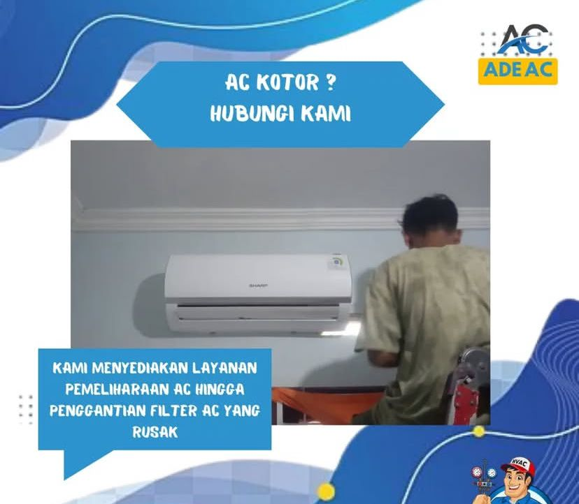
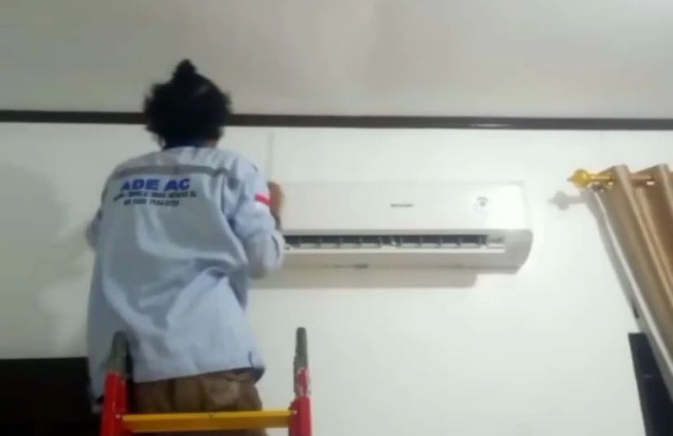
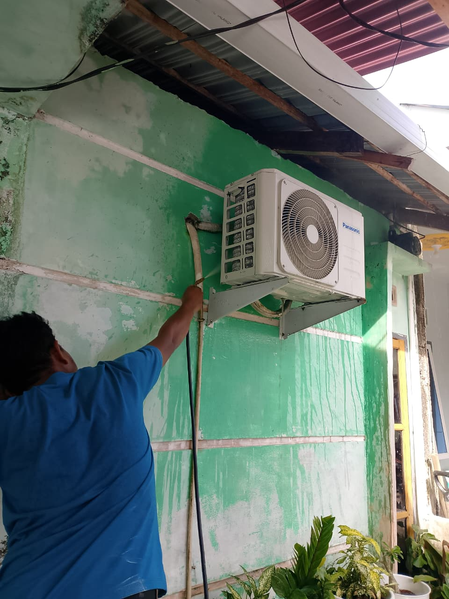
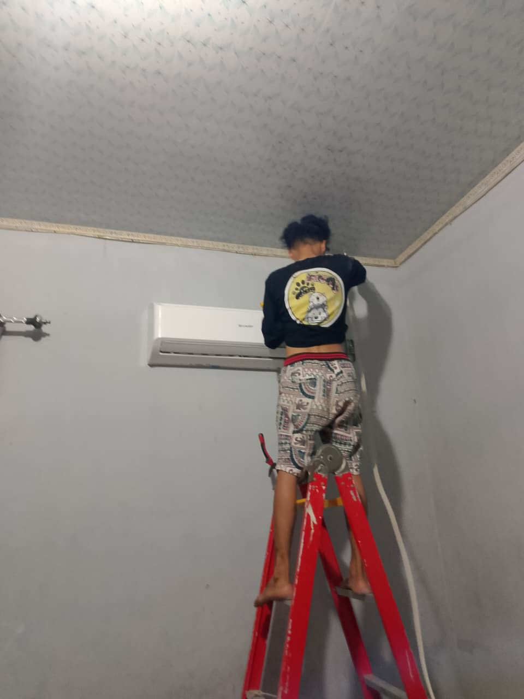
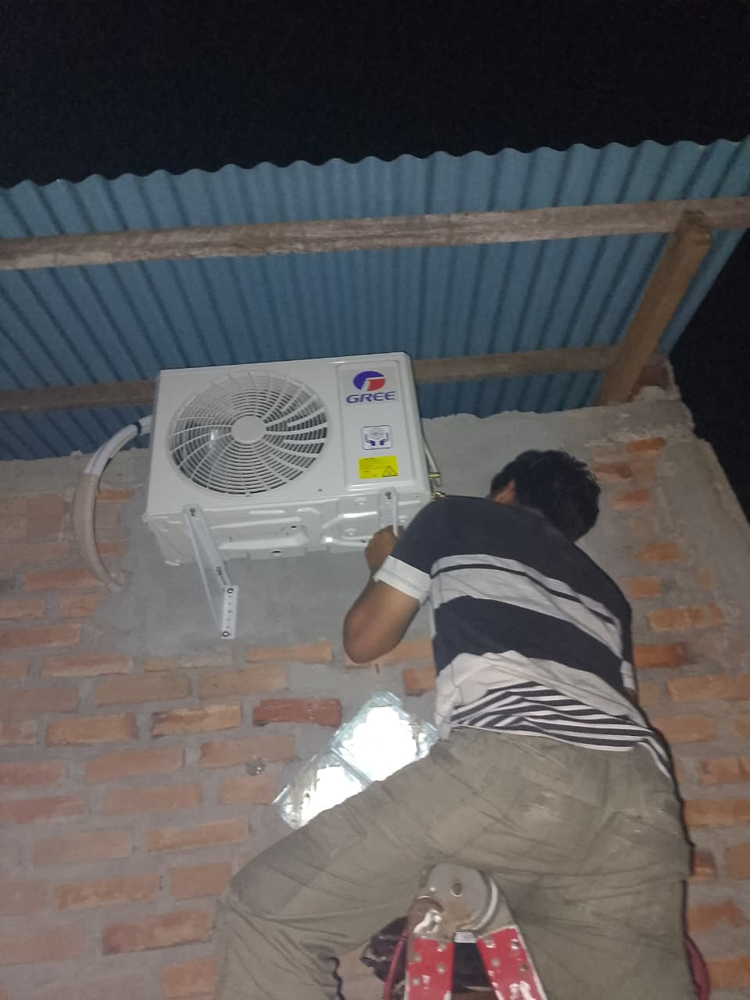
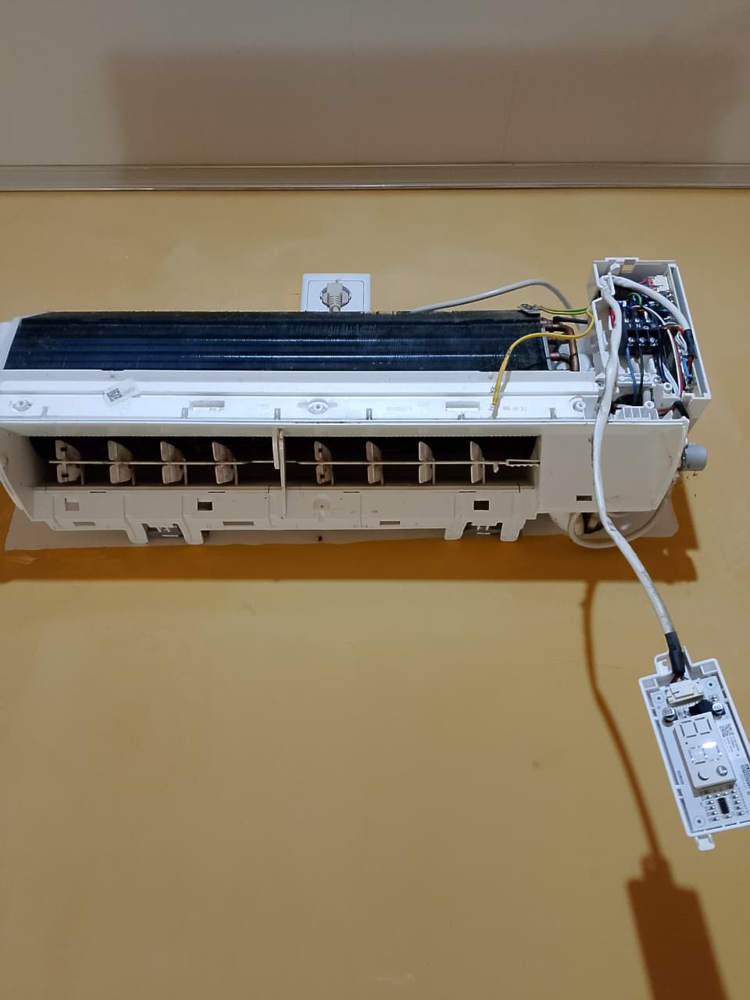
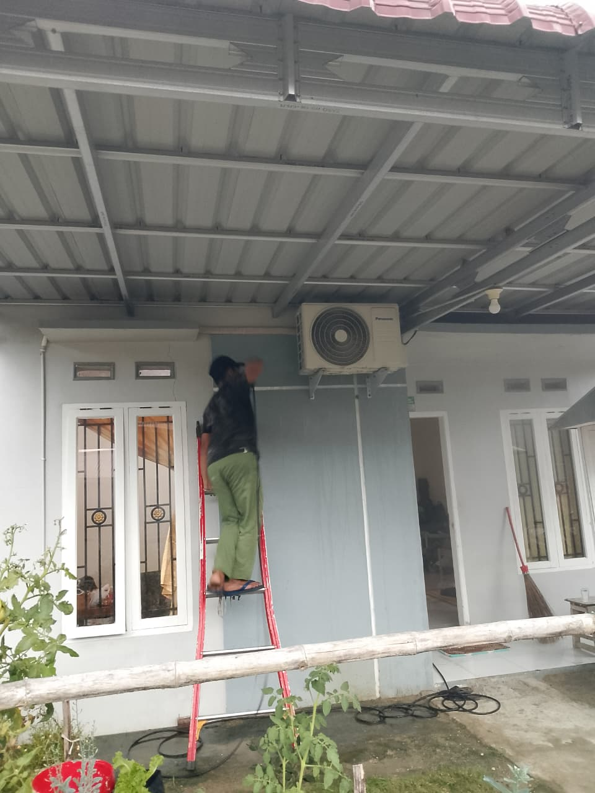
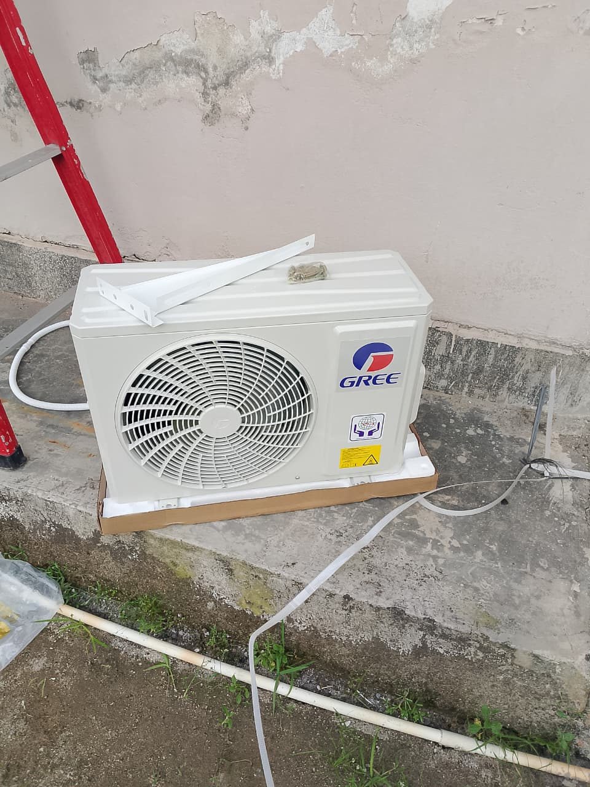

Jasa Service AC Kota Pariaman & Sekitarnya
Anda Ingin Hasil Service Maximal & Sesuai Harapan Dengan Biaya Terjangkau? Percayakan Kepada Kami! Pakar Reparasi ADE AC Tersedia Di Kota Pariaman.
Hubungi Sekarang
Anda Ingin Hasil Service Maximal & Sesuai Harapan Dengan Biaya Terjangkau? Percayakan Kepada Kami! Pakar Reparasi ADE AC Tersedia Di Kota Pariaman.
Hubungi Sekarang
ADE AC melayani berbagai kebutuhan AC Anda, mulai dari penjualan, pemasangan, hingga perbaikan. Kami siap membantu menjaga kenyamanan ruangan Anda dengan layanan profesional dan harga terjangkau. Berikut adalah beberapa layanan yang kami tawarkan:
Menyediakan AC berbagai tipe dan merek seperti Sharp, Panasonic, dan LG, untuk rumah ,kantor,dan tempat usaha lainnya.
Service & perawatan AC bergaransi dengan harga terjangkau.
Layanan instalasi AC baru dengan standar yang rapi dan aman.
Mengatasi AC yang tidak dingin, bocor, mati total, dan masalah lainnya dengan teknisi profesional.
Perbaikan kulkas tidak dingin, bocor, atau mati total.
Penggantian kompresor kulkas dan AC dengan teknisi profesional.
ADE AC adalah penyedia jasa servis, pemasangan, dan perawatan AC yang berkomitmen memberikan layanan terbaik untuk kenyamanan Anda. Kami hadir untuk membantu menjaga performa AC tetap optimal, hemat energi, dan tahan lama, baik untuk kebutuhan rumah tangga, perkantoran, maupun usaha. Dengan didukung oleh teknisi yang berpengalaman dan profesional, ADE AC siap menangani berbagai permasalahan AC seperti tidak dingin, bocor, berisik, hingga kerusakan pada komponen utama. Selain itu, kami juga melayani pemasangan AC baru dengan standar instalasi yang rapi dan aman. Kami memahami bahwa kenyamanan ruangan sangat penting bagi aktivitas sehari-hari. Oleh karena itu, kami selalu mengutamakan ketepatan waktu, kualitas pekerjaan, serta pelayanan yang ramah dan transparan dalam setiap pengerjaan. Kepercayaan pelanggan adalah prioritas utama kami. Dengan harga yang terjangkau dan hasil kerja yang maksimal, ADE AC siap menjadi solusi terbaik untuk semua kebutuhan AC Anda di Kota Pariaman dan sekitarnya.







